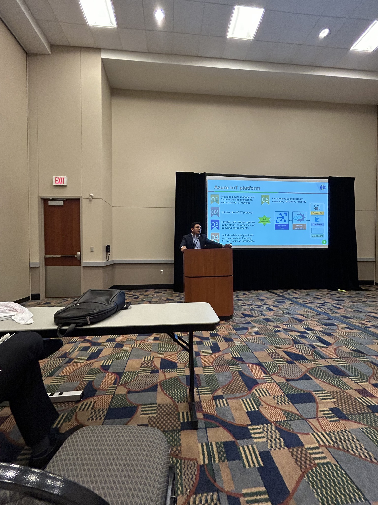
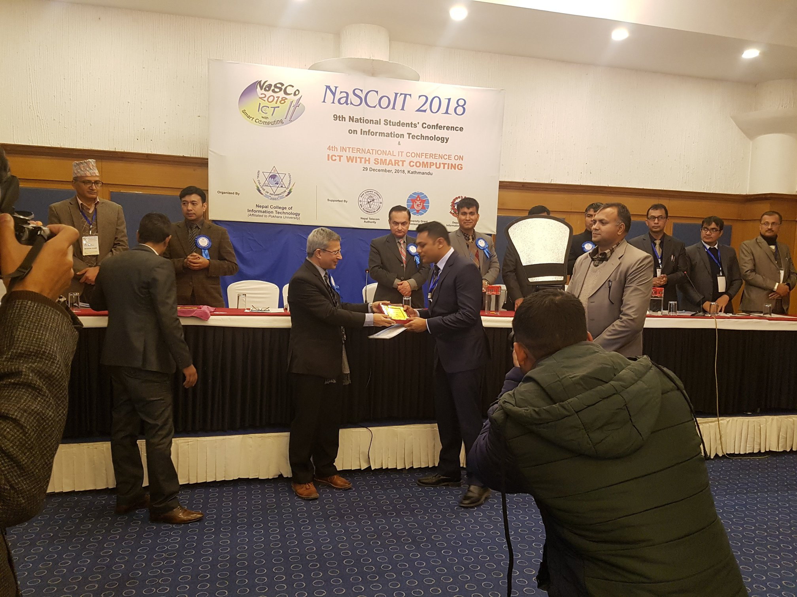
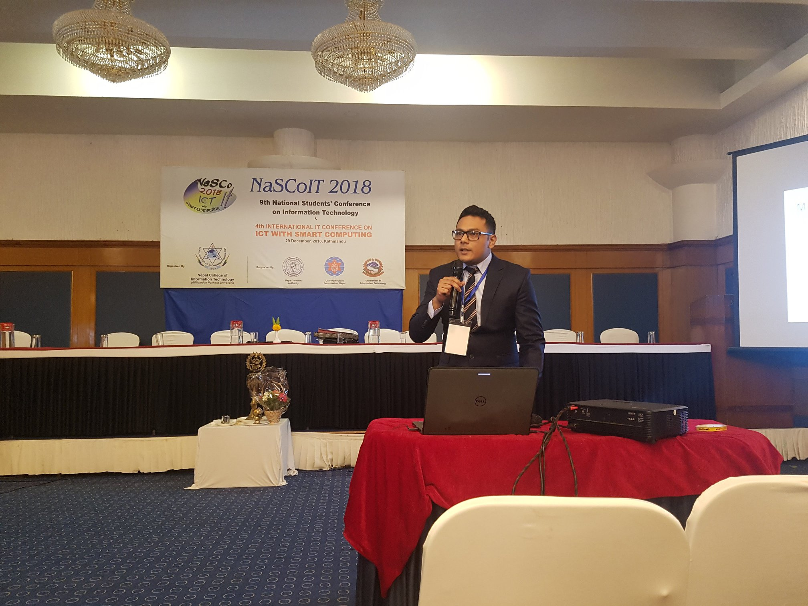
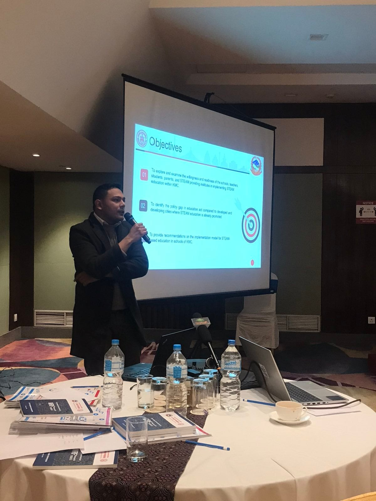
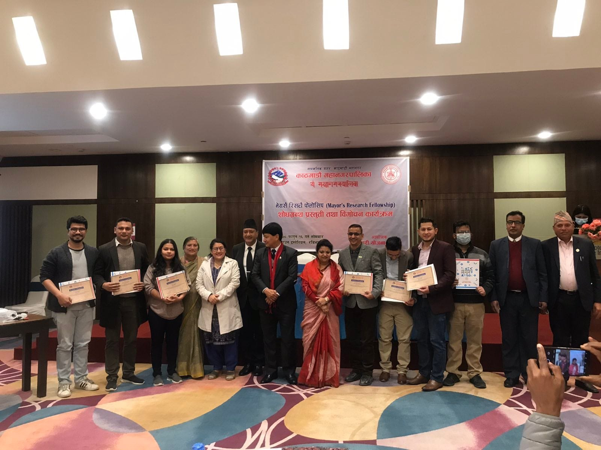
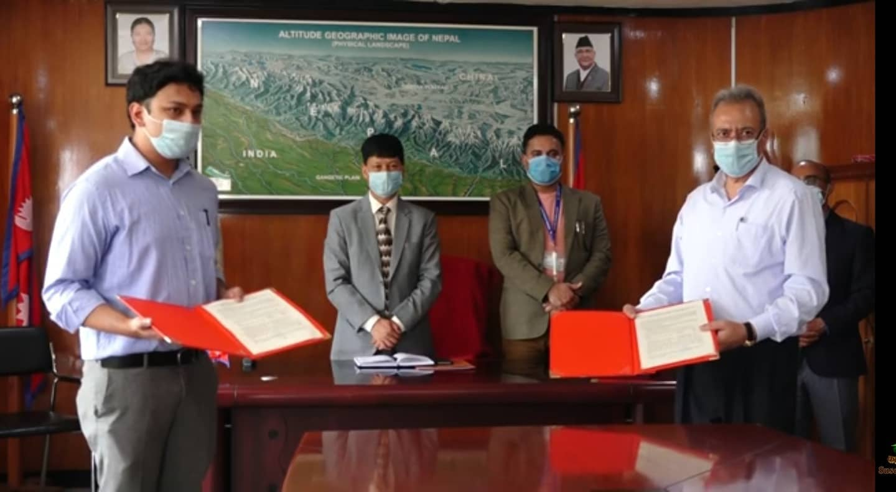
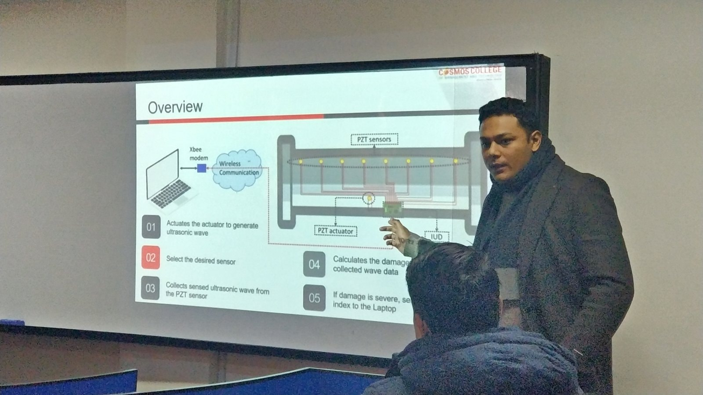
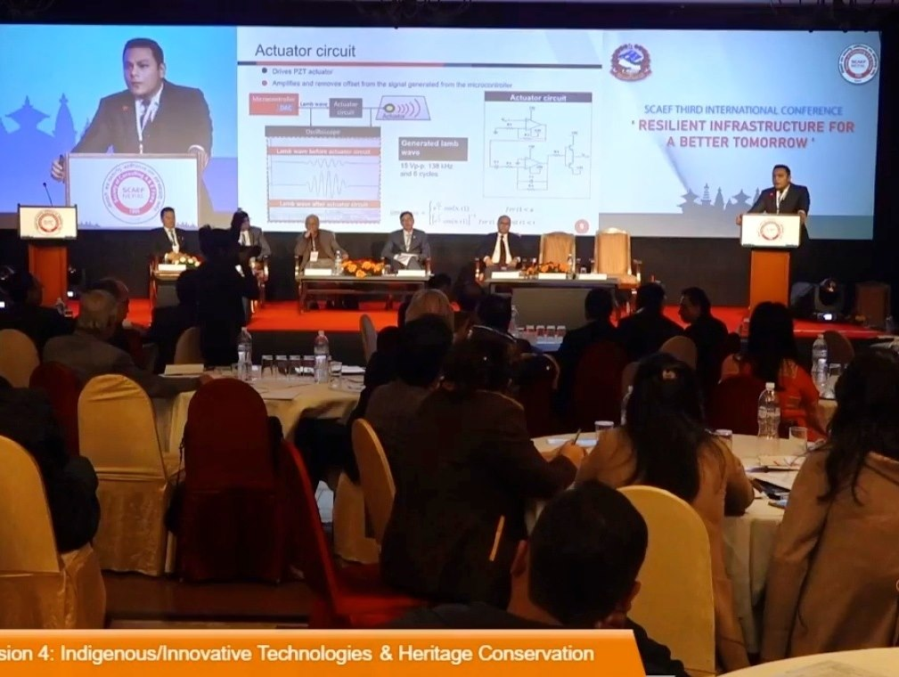
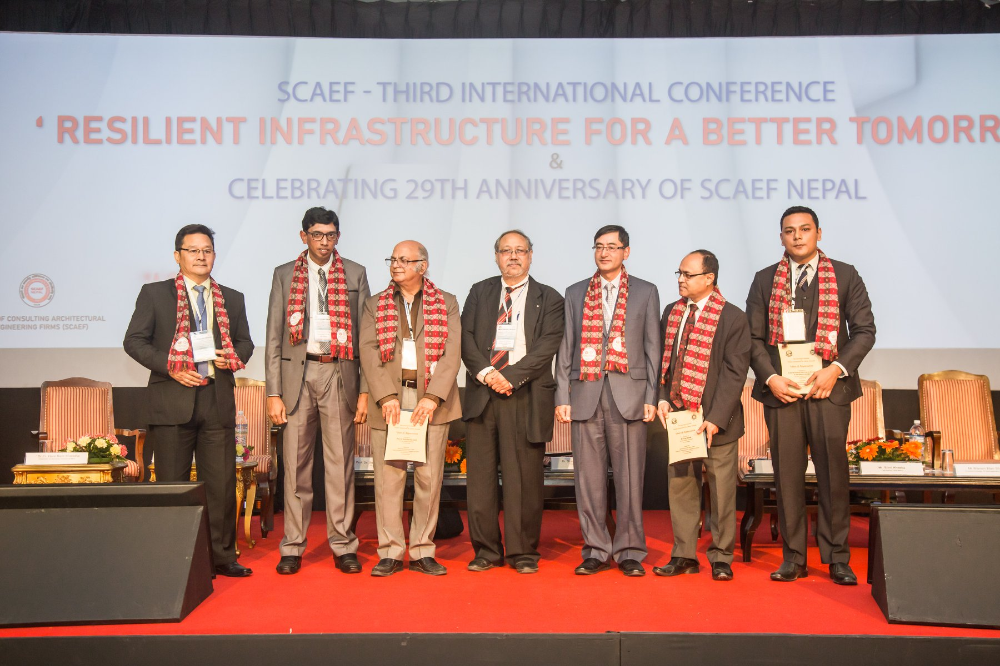

Manish Man Shrestha
Embedded Systems, Robotics & Cyber-Physical Systems Engineer

Manish Man Shrestha
Embedded Systems, Robotics & Cyber-Physical Systems Engineer
Embedded-systems engineer and researcher with 15+ years of experience spanning real-time firmware, sensing and control, robotics, edge computing, signal processing, and secure cyber-physical systems. My work includes Embedded C/C++, ARM Cortex-M, STM32, ESP32/ESP-IDF, FreeRTOS, device interfacing, board bring-up, sensor and actuator integration, wireless communication, and hardware-software debugging. I have developed robotic control platforms, real-time ultrasonic sensing systems, distributed environmental monitoring systems, and secure IoT platforms, and I use R/Python for experimental data analysis, statistical modeling, and model validation.
Work Experience
-
Graduate Research Assistant
Jan 2023 – Present
South Dakota State University (SDSU)
Brookings, South Dakota, USA- Conduct interdisciplinary research on real-time agricultural and environmental monitoring, controlled-environment agriculture, and cyber-physical sensing systems.
- Designed and deployed distributed ESP32-S3/FreeRTOS monitoring systems integrating Modbus/RS-485, analog and digital sensors, MQTT/TLS telemetry, sensor validation, and fault-handling logic.
- Developed automated hydroponic control functions for pumps and grow lights using real-time sensing and embedded control logic.
- Implemented AES, ChaCha20-Poly1305, Kyber, and Dilithium on resource-constrained embedded devices and evaluated real-time performance.
- Developed C#/.NET processing tools and ASP.NET dashboards for telemetry retrieval, verification, decryption, processing, and visualization.
- Applied R and Python for time-series analysis, statistical modeling, machine learning, experiment analysis, and model validation.
-
Teaching Assistant
Jan 2023 – Dec 2025
South Dakota State University (SDSU)- Supported Engineering Properties of Biological Materials laboratory instruction, experimental setup, data analysis, and student guidance.
-
Assistant Professor
Aug 2017 – Dec 2022
Cosmos College of Management and Technology
Lalitpur, Nepal- Taught Industrial Electronics and Drives, Digital Communication, Control Systems, and Embedded Systems.
- Served as PI/Co-PI on externally funded research involving multichannel ultrasonic devices, IoT-enabled structural monitoring, and STEAM education.
- Designed and developed intelligent ultrasonic sensing systems and published research in IoT, embedded sensing, and structural health monitoring.
- Helped establish and advance the Cosmos Research Management Cell.
-
CTO / Technical Consultant
Apr 2017 – Dec 2022
Samadhan Engineering Pvt. Ltd.
Kathmandu, Nepal- Led firmware and hardware R&D for embedded sensing, control, STEAM, robotics, and hydroponics systems.
- Implemented real-time motor-control firmware using PWM, timers, ADC feedback, RTOS scheduling, actuator control, and sensor interfaces.
- Designed and reviewed PCB layouts in Altium Designer and supported board bring-up, testing, and hardware-firmware debugging.
- Established Git-based version control and YAML/Docker-based CI/CD workflows for repeatable firmware builds and release artifacts.
- Developed a multi-axis servo robotic arm and a teleoperated mobile robot with DC motor control, wireless input handling, live video streaming, and real-time motion logic.
-
Research Scientist
Mar 2016 – Mar 2017
Measurement Robotics & Diagnostic AI Lab, KAIST
Daejeon, Republic of Korea- Developed real-time firmware on dual-core ARM Cortex-M4 (LPC4370) for ultrasonic signal generation, synchronized sensing, and high-speed data acquisition.
- Implemented FFT, IIR, and FIR filtering directly on ARM Cortex-M4 for on-device structural response analysis.
- Built wireless data-acquisition pipelines using the lwIP TCP/IP stack and validated an embedded wireless ultrasonic platform for aircraft structural monitoring.
-
Research Assistant
Aug 2013 – Feb 2016
Jeonbuk National University
Jeonju, Republic of Korea- Developed a laser-based excitation and ultrasonic sensing system integrating actuator control, high-speed acquisition, signal processing, and wireless communication.
- Developed a custom Qt/C++ application for laser control, data acquisition, signal processing, and waveform visualization.
- Used MATLAB/Simulink and LabVIEW for modeling, algorithm prototyping, experimental analysis, and visualization.
-
Design Engineer
Mar 2011 – Aug 2013
Real Time Solutions Pvt. Ltd.
Lalitpur, Nepal- Developed Embedded C/C++ firmware for ARM, PIC, and 8051 microcontrollers, including device drivers, communication stacks, and RTOS/cooperative scheduling.
- Implemented UART, SPI, Modbus RTU, and cellular telemetry, including a Modbus RTU implementation developed from scratch.
- Developed firmware for panel meters, MPPT solar battery chargers, queue-management systems, and flood early-warning devices.
Education
-
Ph.D. in Agricultural and Biosystems Engineering
2026
South Dakota State University, Brookings, South Dakota, USA -
Graduate Certificate in Data Science
2025
South Dakota State University, Brookings, South Dakota, USA -
M.E. in Mechatronics Engineering
2016
Jeonbuk National University, Jeonju, Republic of Korea -
B.E. in Electronics and Communication Engineering
2010
Cosmos College of Management and Technology, Nepal
Selected Engineering Projects
Selected hands-on work spanning real-time firmware, robotics, sensing, signal processing, communications, and cyber-physical systems.
Multichannel Ultrasonic Structural Health Monitoring Device
STM32 Cortex-M4 + ESP32 | Embedded C/C++ | DSP | Real-Time Acquisition
Developed synchronized signal generation and high-speed sensing firmware with FFT/IIR processing, wireless communication, an SSD1306 OLED driver, and hardware bring-up/debugging using oscilloscopes and logic analyzers.
ROS 2 / micro-ROS Sensor Telemetry Prototype
Raspberry Pi + STM32 | ROS 2 | micro-ROS | FreeRTOS | UART
Configured a Raspberry Pi micro-ROS Agent and Python ROS 2 subscriber, and implemented an STM32 micro-ROS C publisher within an RTOS task using rclc executor/timer logic.
Robotic Arm Control Platform
Raspberry Pi | PCA9685 | I2C | Servo Control | Python
Developed a multi-axis robotic arm using hardware-timed PWM, actuator range calibration, coordinated joint movement, and timing control for smooth and repeatable positioning.
Teleoperated Mobile Robot
Raspberry Pi | H-Bridge | GPIO | Bluetooth | Camera
Integrated DC motor control, wireless input-event handling, live camera streaming, and real-time motion logic; debugged control-response timing and hardware-software interaction issues.
Distributed Secure Monitoring System
ESP32-S3 | FreeRTOS | Modbus/RS-485 | MQTT/TLS | PQC
Built a multi-node embedded telemetry system for real-time sensing with sensor interfacing, secure communications, signature verification, fault handling, and backend visualization.
Industrial Embedded Systems
ARM / PIC / 8051 | Modbus RTU | DSP | PWM | Field Deployment
Developed firmware for panel meters, MPPT solar chargers, queue-management systems, and flood early-warning nodes, including custom communication protocols and deterministic signal-processing/control paths.
Project & Research Gallery



{kind=link}

{kind=link}

{kind=link}

{kind=link}

{kind=link}

{kind=link}

{kind=link}

{kind=link}

{kind=link}
Selected Journal Articles
- Shrestha, M. M., Wei, L., & Sher, M. (2026). A Distributed IoT System with Post-Quantum Cryptography in Real-Time Monitoring of Nitrate and Soil Moisture in Corn Production. Smart Agricultural Technology, 102335. DOI
- Alam, S. M. S., Wei, L., Wu, Y., Ozor, T., Rubel, R. I., Cidreira, A., & Shrestha, M. M. (2026). Synergetic effects of biochar and biofertilizer on corn production under greenhouse conditions. Communications in Soil Science and Plant Analysis, 1–17. DOI
- Shrestha, M. M., & Rajbamshi, S. (2026). Secure IoT-enabled edge computing ultrasonic device for structural health monitoring in inaccessible metallic structures. Engineering Research Express, 8, 135306. DOI
- Shrestha, M. M., & Wei, L. (2024). Review—Perspectives on the roles of real-time nitrogen sensing and IoT integration in smart agriculture. Journal of The Electrochemical Society, 171(2), 027526. DOI
- Choi, M., Shrestha, M. M., Lee, J. R., & Park, C. Y. (2018). Development of a laser-powered wireless ultrasonic device for aircraft structural health monitoring. Structural Health Monitoring, 17(2), 145–155. DOI
- Shrestha, M. M., Ropakheti, B., Bhattarai, U., & Shakya, A. (2022). Development and implementation of portable ultrasonic sensor circuit with USB interface and signal processing to detect damages in the mild steel structure. Advances in Engineering and Technology: An International Journal, 2(01), 123–130.
Manuscripts Under Review
- Nawaz, T., Shrestha, M. M., Gu, L., Sher, M., Zahid, A., Wei, L., & Zhou, R. (2026). Real-time assessment of biofilm-forming cyanobacteria on soil moisture dynamics via IoT-integrated sensors. Smart Agricultural Technology.
- Shrestha, M. M., & Wei, L. (2026). Post-quantum security for hydroponic IoT monitoring using Kyber512, ChaCha20-Poly1305, and Dilithium2. Information Processing in Agriculture.
Government-Published Research Chapter
- Shrestha, M. M. (2022). The Urgency of STEAM Education for Driving KMC as an Innovation Hub. In MRF Research 2020/21 (pp. 107–133). City Planning Commission, Kathmandu Metropolitan City.
Selected Conference Proceedings & Presentations
- Shrestha, M. M., & Wei, L. (2025). Integrating IoT and secure data transmission in a crop monitoring system. 2025 ASABE Annual International Meeting, Paper No. 2500564.
- Chong, S. Y., Shrestha, M. M., & Lee, J. R. (2014). Development of wireless ultrasonic propagation imaging system for in-situ aircraft inspection. Proceedings of the 7th European Workshop on Structural Health Monitoring.
- Shrestha, M. M., & Lee, J. R. (2016). Development of Wi-Fi based wireless ultrasonic device for structural health monitoring for aircraft structure. Advances in Structural Health Management and Composite Structures 2016.
- Shrestha, M. M., Chong, S. Y., & Lee, J. R. (2015). Development of wireless ultrasonic propagation imaging system. 10th International Workshop on Structural Health Monitoring, Stanford University.